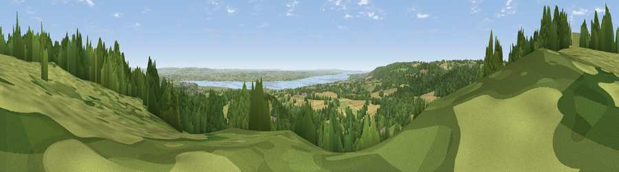

Viewpoint near Aylburton
#6222 in England · top 11% of its area beats it · near Aylburton · access?Where it is
The exact computed spot (SO 60212 03138). Click the marker for map links.
Public access: no public right of way or access land is recorded at this exact spot — it may be on private land. Computed from Natural England's CRoW access layer and OpenStreetMap rights of way — not the legal definitive map. Always verify locally.
The view, rendered

A 360° render of this exact spot computed from the terrain model, tree cover and land cover — summer colours, afternoon light, calibrated against photographs of famous viewpoints. Real trees, hedges and buildings will differ in detail.
The panorama
Grey silhouette: terrain skyline in each direction (720 bearings, Earth curvature and refraction included). Dashed green: skyline with trees (+15 m) and buildings (+8 m) as obstacles. Blue strip: how far the ground is visible on each bearing.
Where the view opens
Wedge length = distance to the farthest visible ground on that bearing (vegetation-aware). Rings at 10, 25 and 50 km.
What fills the view
45% woodland · 40% grassland · 10% cropland · 4% water · 2% built-up
Angular shares of the visible panorama (visual magnitude), not map area. Landscape diversity 0.50 (0–1 Shannon).
Key numbers
More beautiful places nearby
The staircase of upgrades: each row has a higher view potential than everything closer. Driving times are estimates from straight-line distance, calibrated against real road routing — check an actual route before setting out.
| Place | Direction | Drive | Score |
|---|---|---|---|
| Viewpoint near Hewelsfield | WSW · 3 km | ~7 min | 69.4 |
| Viewpoint near Hewelsfield | SW · 3 km | ~8 min | 70.7 |
| Viewpoint near Yorkley | NE · 5 km | ~11 min | 70.9 |
| Buck Stone | NW · 11 km | ~21 min | 71.0 |
| Viewpoint near Littledean | NE · 13 km | ~24 min | 73.8 |
| Viewpoint near Stinchcombe | ESE · 14 km | ~26 min | 78.7 |
| Viewpoint near Stinchcombe | ESE · 14 km | ~26 min | 79.4 |
| Viewpoint near Stinchcombe | ESE · 14 km | ~26 min | 80.5 |
51.72554, -2.57744 · source: screening · position refined by local search. Computed location — check access rights before visiting.